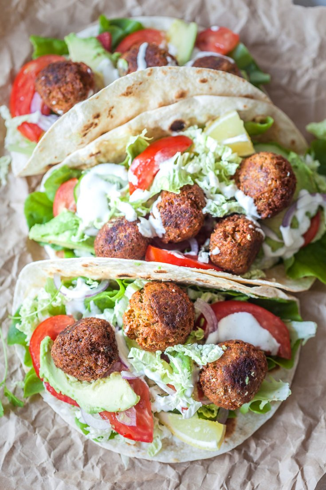

Vegan Falafel

Mediterrean food is one of the easiest cuisines to modify to a plant-based diet! With the cuisine rich in vegetables and legumes such as peppers and chickpeas, all you need to do is spice to your liking.
The reason I love mediterrean food are their vast colors implemented in food, so that is what we are going to do now!
Here are the ingredients you will need to make the vegan falafel wrap (serves 2)
- vegan seeded wraps, try to read the ingredients that it does not include palm oil
- premade falafel box, over baked
- medium avocado (1)
- medium red pepper (1)
- medium red onion (1)
- iceberg lettuce (1/2)
- lime (1)
- roma tomatoes (2)
- vegan tzatziki (100g)
- slices of violife original vegan cheese (4)
- basmati rice (.5 cups)
- vegetable oil (25 mL)
- dried parsley to taste
- salt to taste
- sriracha (optional but highly recommended!)
Here comes the fun part! Putting it all together.
- Preheat the oven to 180 C, if you're using fan. If you're using regular, bump up to 200C
- Preheat all the vegetable oil in a pan on medium heat.
- Mince your red onion and red pepper and toss it into the pan once the oil is hot.
- While the onion and red peppers are cooking, put the premade falafel into an oven safe tray and put in the oven for 12 minutes.
- In a bowl, mash the avocado and add salt to your liking.
- Chop up the tomatoes,iceberg lettuce, and lime to squeeze to add as a fresh add on the last part of the process
- Add in the premade rice into the onion and peppers and adding in the dried parsley. Cook until rice is warmed up. Leave on low heat.
- Take two slices of the violife cheese and place them on the wrap, chucking into the oven for 2 minutes.
- Once you take out the wraps and falafel, assemble to your liking! Don't forget to add sriracha for taste.
Home
Other Recipes